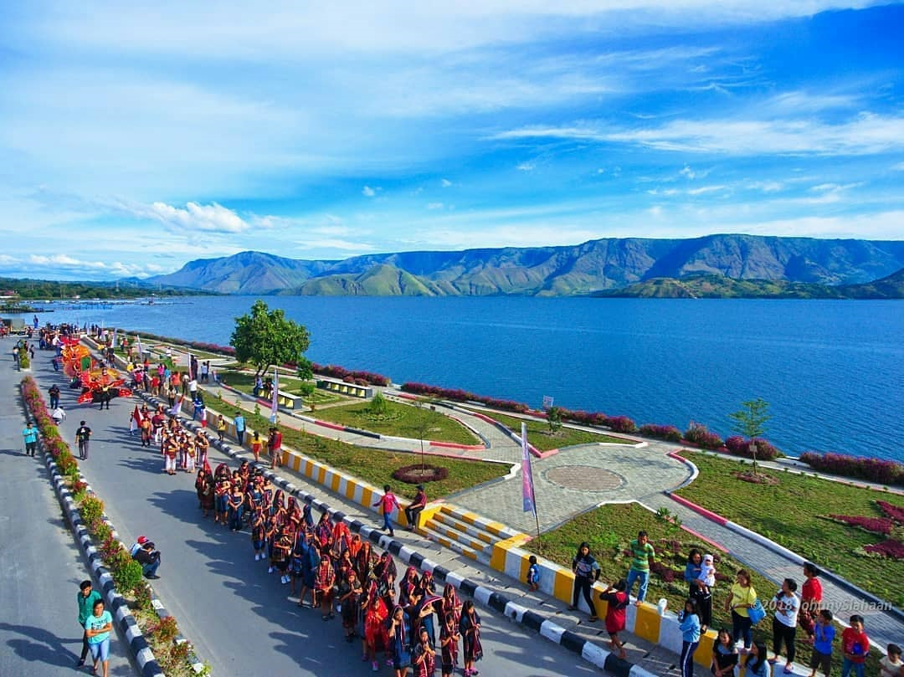

Wisata Danau Toba

Danau Toba (Surat Batak: ᯖᯀᯬ ᯖᯬᯅ; transliterasi: Tao Toba) adalah danau alami berukuran besar di Indonesia yang berada di kaldera Gunung Supervulkan. Danau ini memiliki panjang 100 kilometer (62 mil), lebar 30
kilometer (19 mi), dan kedalaman 508 meter (1.667 ft). Danau ini terletak di tengah pulau Sumatra bagian utara dengan ketinggian permukaan sekitar 900 meter (2.953 ft). Danau ini membentang dari 2.88°N 98.52°E
sampai 2.35°N 99.1°E. Ini adalah danau terbesar di Indonesia dan danau vulkanik terbesar di dunia. Danau Toba adalah lokasi letusan gunung berapi super masif berkekuatan VEI 8 sekitar 69.000 sampai 77.000 tahun
yang lalu yang memicu perubahan iklim global. Metode penanggalan terkini menetapkan bahwa 74.000 tahun yang lalu lebih akurat. Letusan ini merupakan letusan eksplosif terbesar di Bumi dalam kurun 25 juta tahun
terakhir. Menurut teori bencana Toba, letusan ini berdampak besar bagi populasi manusia di seluruh dunia; dampak letusan menewaskan sebagian besar manusia yang hidup waktu itu dan diyakini menyebabkan penyusutan
populasi di Afrika, Timur Tengah, dan India sehingga memengaruhi genetika populasi manusia di seluruh dunia sampai sekarang.
Sejarah Sumatera Utara

Pada zaman pemerintahan Belanda, Sumatra Utara merupakan suatu pemerintahan yang bernama Gouvernement van Sumatra dengan wilayah meliputi seluruh pulau Sumatra yang dipimpin oleh seorang gubernur yang
berkedudukan di Kota Medan.Kemudian pada tahun 1948, berdasarkan Undang-undang Republik Indonesia No. 10 Tahun 1948, Provinsi Sumatra dibagi menjadi tiga provinsi berbeda yaitu: Sumatra Utara, Sumatra Tengah, dan
Sumatra Selatan. Provinsi Sumatra Utara sendiri merupakan penggabungan dari tiga daerah administratif yang disebut keresidenan yaitu: Keresidenan Aceh, Keresidenan Sumatra Timur, dan Keresidenan Tapanuli. Dengan
diterbitkannya Undang-Undang Republik Indonesia (R.I.) No. 10 Tahun 1948 pada tanggal 15 April 1948, ditetapkan bahwa Sumatra dibagi menjadi tiga provinsi yang masing-masing berhak mengatur dan mengurus rumah
tangganya sendiri yaitu: Provinsi Sumatra Utara, Provinsi Sumatra Tengah, dan Provinsi Sumatra Selatan. Tanggal 15 April 1948 selanjutnya ditetapkan sebagai hari jadi Provinsi Sumatra Utara. Pada awal tahun 1949,
dilakukan kembali reorganisasi pemerintahan di Sumatra. Dengan Keputusan Pemerintah Darurat R.I. Nomor 22/Pem/PDRI pada tanggal 17 Mei 1949, jabatan Gubernur Sumatra Utara ditiadakan. Selanjutnya dengan Ketetapan
Pemerintah Darurat R.I. pada tanggal 17 Desember 1949, dibentuk Provinsi Aceh dan Provinsi Tapanuli/Sumatra Timur. Kemudian, dengan Peraturan Pemerintah Pengganti Undang-Undang No. 5 Tahun 1950 pada tanggal 14
Agustus 1950, ketetapan tersebut dicabut dan dibentuk kembali Provinsi Sumatra Utara. Dengan Undang-Undang R.I. No. 24 Tahun 1956 yang diundangkan pada tanggal 7 Desember 1956, dibentuk Daerah Otonom Provinsi
Aceh, sehingga wilayah Provinsi Sumatra Utara sebagian menjadi wilayah Provinsi Aceh.